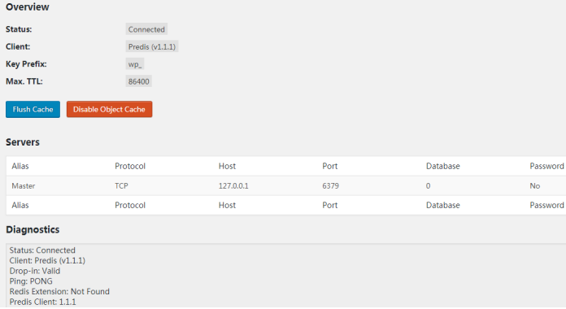

1. 前言
通过缓存加速 WordPress 站点访问的方法有很多，从软件层面来说，主要有两种方式：
- 生成静态页面缓存（如通过 WP Super Cache 插件实现）
- 动态对象缓存（如通过 Redis Object Cache 插件实现，详见本文）
对于一般的站点来说（例如WordPress博客，但需保证其大部分页面都没有随机化查询），如果不是刚需，使用WP Super Cache插件进行静态页面缓存加速是够用的，方便且暴力。
当然也可使用Redis Object Cache（基于Redis的动态对象缓存），但这更适用于那些经常需要动用数据库查询的站点（例如WordPress论坛）。
那么究竟什么时候用静态缓存，什么时候用动态缓存？可以参考下面两个例子：
① 假设一个日IP大于2万的WordPress站点，虽然这个站的流量很高，但是站点本身不需要开放用户注册的功能，那么站长最好的加速方案就是用各种类似WP Super Cache的插件生成静态页面。因为这类站点本身就不大需要动用数据库查询，所以自然也就不太需要Redis做对象缓存。
② 假设还是一个日IP大于2万的WordPress站点，但是这个站点必须要开放用户注册，并且用户注册的数量也相当之多，每天登录的用户也相当之多，那么这个时候一个生成静态页面的缓存插件可能就达不到理想的效果了。因为用户登录的这种行为，插件是无法静态化的，那么这种本身就需要经常动用数据库查询的操作，该如何提高效率呢？这个时候就需要用到Redis的对象缓存了。从本质上看，对象缓存就是缓存那些经常需要在数据库中查询的数据，当这种数据再次需要查询的时候，就可以通过Redis直接从内存中读取，而不需要再到MySQL中反复查询。这样就达到了一个加速、优化的效果。
下面则针对 WordPress + Redis 的部署方式进行详细说明。
2. Redis 部署环境声明
本文是基于Centos7系统中LAMP环境下的WordPress站点（详见《LAMP环境 + WordPress 部署笔记》），进行Redis缓存加速服务的部署。
3. Redis 数据库服务端安装
到官网下载最新版，本文下载的版本是 redis-4.0.10.tar.gz：
- 中文官网：http://www.redis.cn/
- 英文官网（需翻墙）：https://redis.io/
上传到WordPress所在的服务器，本文上传位置为（注意这个位置就是最终的安装目录）：
/usr/local/redis-4.0.10.tar.gz
解压安装包：
tar -zxvf redis-4.0.10.tar.gz
由于Redis需要编译安装，先安装gcc编译环境：
yum install gcc
进入Redis安装目录：
cd /usr/local/redis-4.0.10/
编译：
make MALLOC=libc
编译完成后，进入src目录：
cd /usr/local/redis-4.0.10/src/
把 src 目录下的文件安装到 /usr/local/bin ：
make install
至此Redis数据库服务端安装完成。
4. Redis配置
默认情况下，Redis是通过这种方式启动的，非但无法在后台运行，而且也不符合使用习惯：
cd /usr/local/redis-4.0.10/src/ # 切换到启动脚本目录
./redis-server ../redis.conf # 启动Redis
Ctrl + C # 停止Redis另外Redis也不直接支持开机自启，为此要对其进行改造。
4.1. 设置Redis为后台进程启动模式
通过vi修改redis.conf文件：
vi /usr/local/redis-4.0.10/redis.conf
修改为支持后台启动，找到关键字 daemonize no，修改为：
daemonize yes
这里 顺便修改 最大内存为512M（根据实际情况配置，建议为当前空闲内存的50%左右），找到关键字maxmemory，修改为（注意单位是byte）：
maxmemory 536870912
4.2. 设置Redis开机自启动
在/etc目录下新建redis目录：
mkdir /etc/redis
拷贝redis.conf配置文件到/etc/redis目录下，并重命名为6379.conf（取的是Redis默认端口名称，Redis启动脚本里的变量会读取这个名称，因此若redis的端口号改了，这个文件名也要修改）：
cp /usr/local/redis-4.0.10/redis.conf /etc/redis/6379.conf
拷贝Redis的启动脚本到/etc/init.d目录下，并重命名为redisd：
cp /usr/local/redis-4.0.10/utils/redis_init_script /etc/init.d/redisd
通过vi修改redisd文件：
vi /etc/init.d/redisd
在首行 #!/bin/sh 下面添加两行（其含义是Redis服务必须在运行级2，3，4，5下被启动或关闭，启动的优先级是90，关闭的优先级是10）：
#!/bin/sh
# chkconfig: 2345 90 10
# description: Redis is a persistent key-value database切换到/etc/init.d目录：
cd /etc/init.d
设置为开机自启：
chkconfig redisd on
# 关闭开机自启
# chkconfig redisd off
# 显示所有运行级系统服务的运行状态信息
# chkconfig --list现在可以直接以服务的形式启动和停止Redis了：
- 启动：service redisd start
- 停止：service redisd stop
5. Redis Object Cache 插件安装
直接在WordPress插件中心搜索安装即可，不需要也无法改动Redis配置。只要Redis服务没有修改过端口和密码，就可以使用默认值。
理论上通过修改WordPress的设置文件wp-config.php，可以添加并修改Redis Object Cache的配置，但实测无效（即使重启过服务器也不生效）：
define('WP_REDIS_CLIENT', 'pecl'); // 指定用于与Redis通信的客户端, pecl 即 The PHP Extension Community Library
define('WP_REDIS_SCHEME', 'tcp'); // 指定用于与Redis实例进行通信的协议
define('WP_REDIS_HOST', '127.0.0.1'); // Redis服务器的IP或主机名
define('WP_REDIS_PORT', '6379'); // Redis端口
define('WP_REDIS_DATABASE', '0'); // 接受用于使用该SELECT命令自动选择逻辑数据库的数值
define('P_REDIS_PASSWORD', ''); // Redis密码
define('WP_CACHE_KEY_SALT', 'wp_'); // 设置所有缓存键的前缀（Wordpress多站点模式下使用）
define('WP_REDIS_MAXTTL', '86400');
6. 站点使用Redis后的变化
- 页面访问几乎秒开（部署Redis前后加速非常明显）
- 后台编辑文章时保存变慢（可能需要做缓存同步）
附：Redis的密码问题
默认情况下，Redis是不需要密码登陆的，而且若是用于WordPress的Redis Object Cache插件加速，也不建议配置Redis密码，因为不知道是不是当前Redis Object Cache插件版本的BUG，无法为其配置Redis密码，只能使用Redis的默认配置（无密码）进行数据库连接。
若非要设置Redis密码，可修改redis.conf文件，找到关键字requirepass，修改为：
requirepass 密码